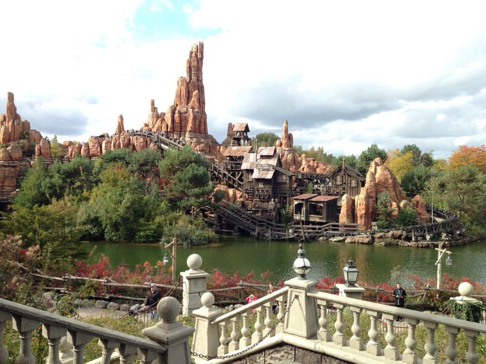
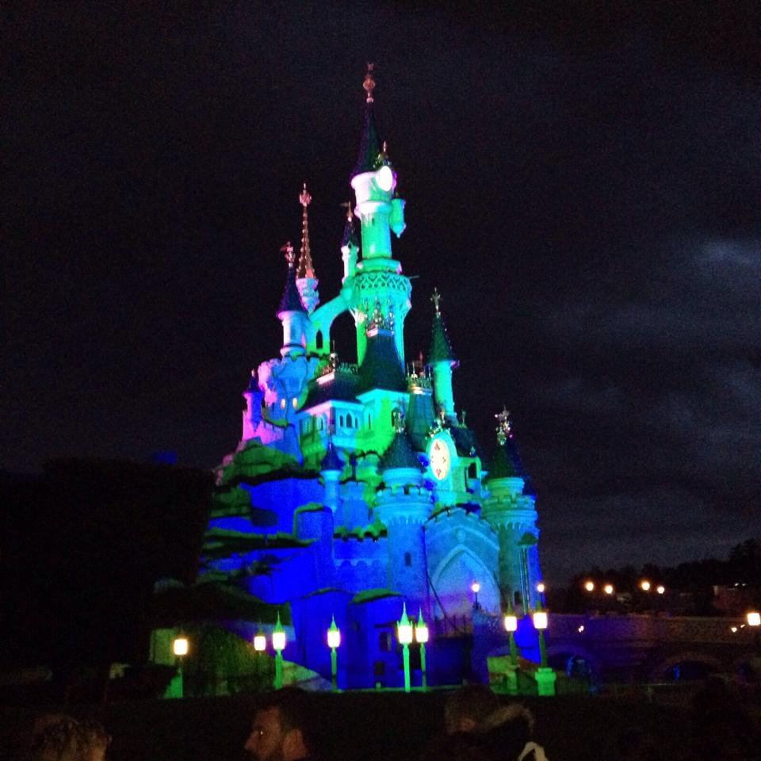
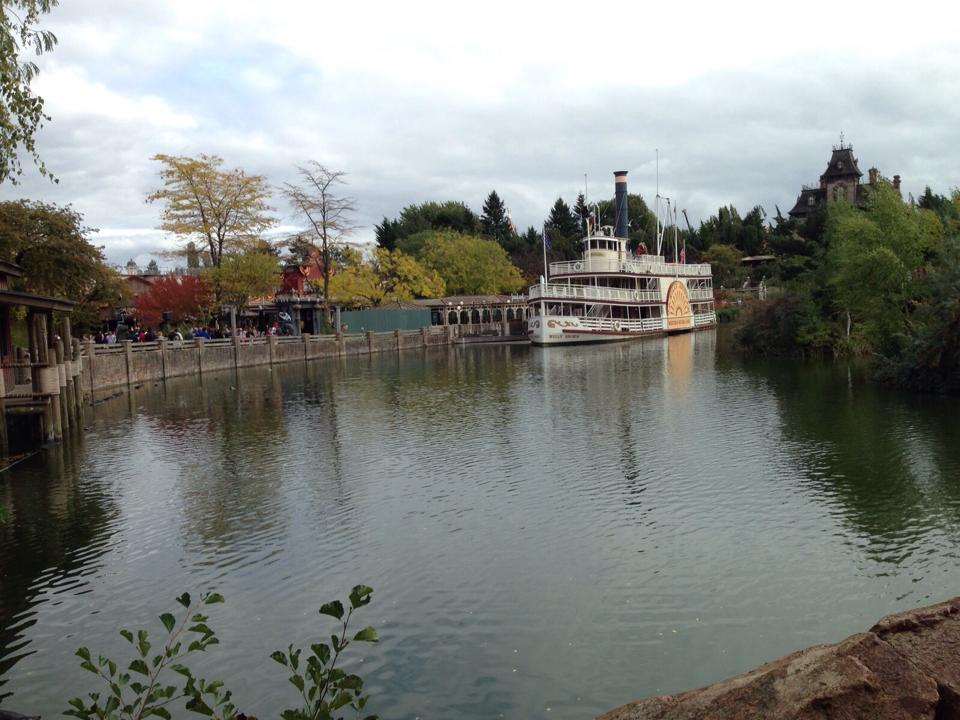
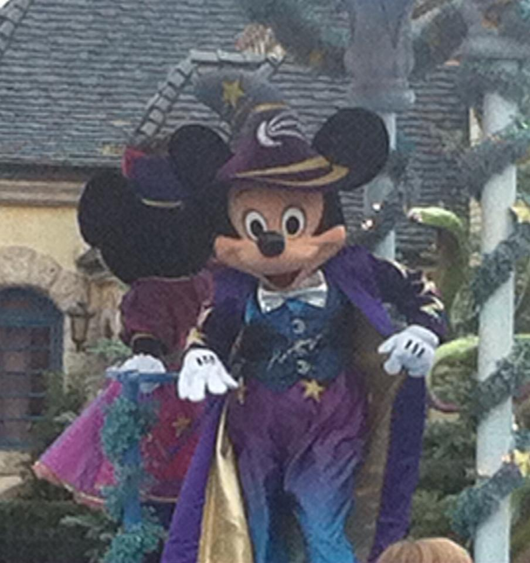

Fantasyland
Sleeping Beauty Castle, classic Disney stories and many of the gentler family attractions make this the part of the park most associated with traditional Disney magic.
Disneyland Paris isn't simply a Paris attraction you squeeze into an afternoon. It's a destination of its own, with two full Disney Parks, hotels, restaurants, shows and enough attractions to make planning the visit properly worthwhile. And in 2026 it changed significantly: Walt Disney Studios Park became Disney Adventure World, bringing World of Frozen and a major new chapter to the resort.
Disneyland Park is the original heart of Disneyland Paris, with Sleeping Beauty Castle at its centre and five themed Lands: Main Street, U.S.A., Frontierland, Adventureland, Fantasyland and Discoveryland.
This is where you'll find many of the resort's classic attractions, from Pirates of the Caribbean and “it's a small world” to Big Thunder Mountain, Phantom Manor and Star Wars Hyperspace Mountain.
Sleeping Beauty Castle, classic Disney stories and many of the gentler family attractions make this the part of the park most associated with traditional Disney magic.
Big Thunder Mountain and Phantom Manor give this western-themed Land two of Disneyland Paris's most recognisable attractions.
A retro-futuristic Disney world that includes Star Wars Hyperspace Mountain and Buzz Lightyear Laser Blast.
On 29 March 2026, the former Walt Disney Studios Park officially became Disney Adventure World. The transformation brought the new World of Frozen, Adventure Way, Adventure Bay and new entertainment alongside existing Marvel and Pixar areas.
That means older Disneyland Paris guides can now be genuinely out of date. If you're planning a trip in 2026 or later, look for Disney Adventure World rather than assuming the old Walt Disney Studios layout still tells the full story.
Arendelle is now part of Disneyland Paris, including Frozen Ever After and character experiences with the world of Anna and Elsa.
Marvel remains one of the park's major immersive areas, including Avengers Assemble: Flight Force and live Super Hero appearances.
Ratatouille and other Pixar experiences remain a major part of the second park alongside its newer additions.
Adventure Way connects the immersive worlds of Disney Adventure World and leads towards Adventure Bay, the park's large new lake. Along the route are landscaped themed gardens, dining and the new Raiponce Tangled Spin attraction.
Adventure Bay is also the setting for Disney Cascade of Lights, a nighttime spectacular combining water-screen projections, drones, fireworks and other visual effects over the lake.
Planning tip: don't automatically leave the second park in late afternoon. Its new nighttime show gives you a reason to think differently about how you divide your evening between the two parks.
Disneyland Paris is much easier when everybody chooses a handful of must-dos rather than spending the entire day racing from queue to queue. A mix of headline rides, slower attractions, a parade or show and time simply wandering the themed areas usually makes for a better day.
A Disneyland Paris favourite in Frontierland and one to prioritise early if it's high on your list.
A classic Adventureland attraction and a good change of pace from the resort's bigger thrill rides.
Disneyland Paris's distinctive haunted-house attraction overlooking Frontierland.
One of the major new draws in Disney Adventure World following the opening of World of Frozen.
Disneyland Paris provides extensive accessibility information for guests with disabilities and specific needs. Services include accessible toilets, wheelchair and stroller rental, dedicated spaces at shows and parades, and accessibility information for individual attractions.
Eligible guests can also apply for a Priority Card, which provides priority — although not immediate — access at attractions, theatres, outdoor shows, parades, Character Encounters and certain service points. Disney says applications can be made online from one month before the visit.
Disneyland Paris publishes specific information for guests with food allergies and dietary restrictions and provides a list of major allergens for its dishes. Restaurants can be extremely busy, so anything important to your diet is worth researching before the visit rather than leaving until you're hungry in the middle of the park.
Disney currently recommends booking popular restaurants in advance through the official Disneyland Paris app, with reservations opening earlier for Disney Hotel guests.
Opening hours and attraction availability can change, so use the official Disneyland Paris app rather than relying on an old screenshot or blog itinerary.
Pick the attractions and shows you'd genuinely be disappointed to miss and build the rest of the day around those.
If both parks matter to you, a multi-day visit gives you far more breathing room than trying to consume the entire resort in one frantic day.
Some of our own photos from Disneyland Paris — from the parks and castle after dark to the scenery and, of course, Mickey himself.




For park tickets and hotel packages, check Disneyland Paris directly so you're seeing current dates, park availability and conditions. You can also browse third-party Disneyland Paris experiences below.
Disclosure: Some links on this page are affiliate links. If you book through them, we may earn a small commission at no extra cost to you.
Common questions
Whether it's part of a Paris break or a trip in its own right, the resort is now big enough — and different enough — to plan separately.